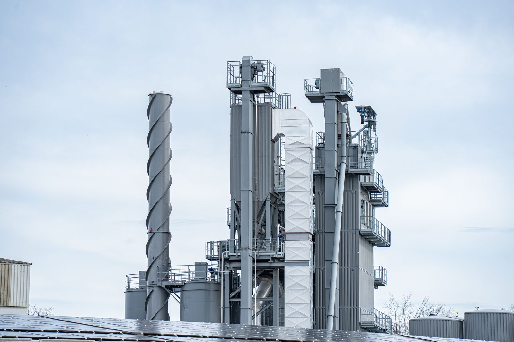

About the Expo
Giresun EXPO is a business gathering that presents Giresun's economic and commercial potential in Istanbul.
Purpose
What is Giresun EXPO?
Giresun EXPO is a comprehensive business gathering that sets out to present Giresun's economic, commercial and entrepreneurial potential on a national and international scale. By bringing investors, producers and entrepreneurs together, it aims to help new partnerships form and to strengthen Giresun's standing as a brand.
Why Giresun EXPO?
Giresun holds considerable potential in production, industry, agriculture, tourism and entrepreneurial culture. The purpose of the EXPO is to make that capacity visible, to create new investment opportunities and to establish a lasting organisation that contributes to the city's economic development.
Who will it bring together?
Giresun EXPO brings public institutions, the private sector, investors, producers, industrialists, entrepreneurs, universities, cooperatives and civil society organisations under one roof, creating solid ground for new partnerships and commercial connections.
Looking ahead
The goal of Giresun EXPO is to establish Giresun as a centre recognised internationally for trade and investment. With a structure that develops each year, the organisation aims to become a respected brand that presents the production capacity of the Black Sea region to Türkiye and the wider world.
Vision
A brand that grows each year
Giresun EXPO is not a one-off fair; it is a sustainable brand that grows every year, increases its international participation and aims to become one of the leading trade organisations.
- Highlighting investment opportunities
- Building new trade networks
- Supporting exports
- Encouraging innovation
- Strengthening Giresun as a brand

Organisation
Our partners

Giresun Federation

ŞEBİNSİAD

Giresun Foundation
Join us at Giresun EXPO
8–11 October 2026, Dr. Mimar Kadir Topbaş Arts and Performance Centre, Istanbul.